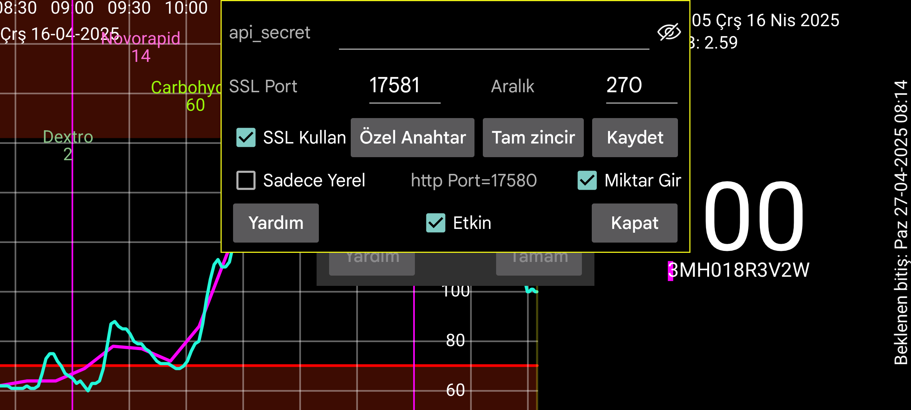

ar be de es fr nl pl ru sv tr uk zh en
Juggluco diğer uygulamaların Juggluco'dan glikoz değerlerini alabileceği bir web sunucusu içerir. xDrip saatleri ve bazı Nightscout uygulamaları tarafından kullanılabilir.
xDrip web sunucusunu kullanmak için yapılmış uygulamaları kullanmak nispeten kolaydır. Sadece Aktif onay kutusunu işaretleyin. Sonra 127.0.0.1'den 17580 portundan glikoz verisi alabilirler.
Nightscout sunucu URL'si: http://127.0.0.1:17580
Ayrıca, bazı Nightscout takipçileri bundan faydalanabilir. xDrip, Diabox, Windows Floating Glucose uygulaması ve Windows, Linux ve macOS widget'ı (Owlet) "Sadece Yerel" ayarlanmadığında http ile kullanılabilir. MacOS'ta aynı durum Nightscout Menü Çubuğu, Gluco Status ve Gluco Tracker (hepsi Apple Store'da) için de geçerlidir. Ayrıca Nightscouter ve LoopFollow (IOS) ve Nightguard (IOS ve WatchOS) için http'ye ihtiyacınız var.
Juggluco'ya internet üzerinden erişmek istiyorsanız, modeminizden bir portunu yönlendirmeniz gerekir. Bakınız:
https://www.makeuseof.com/tag/what-is-port-forwarding-and-how-can-it-help-me
Orta Sol Menü > Klon > Bağlantı Ekle > Yardım
Diğer Nightscout takipçileri yalnızca https kullanır ve bu da Juggluco'ya erişmekte kullanılan alan adı için doğrulanmış bir SSL anahtarına sahip olmasını gerektirir. Harici IP'niz ilişkili bir ana bilgisayar adına sahipse, Certbot aracılığıyla ücretsiz bir sertifika alabilirsiniz. Harici IP'niz bir hostname’e sahip değilse bunu kullanamazsınız. https://www.freenom.com. Bunu denedim, ancak birkaç hafta içinde herhangi bir bildirimde bulunmadan alan adını benden aldılar ve tekrar kaydettirmeye çalıştığımda artık ücretliydi. Yıllık birkaç Euro karşılığında bir ana bilgisayar adı satın alabilirsiniz (örneğin https://www.strato.nl/domeinnaam).
Certbot'u kurduktan ve 80 (http) portunu modeminizden bilgisayarınıza yönlendirdikten sonra, basitçe yazabilirsiniz:
certbot certonly --standalone --preferred-challenges http -d myhostname
Bakınız: https://devpress.csdn.net/linux/62e7999e907d7d59d1c8cfd0.html
Certbot'u kullandıktan sonra Özel Anahtarı /etc/letsencrypt/live/myhostname/privkey.pem'de ve Tam Zinciri /etc/letsencrypt/live/myhostname/fullchain.pem'de buldum. "myhostname" kullandığım ana bilgisayar adıdır.
Eğer anahtar dosyaları bir SSL yetkilisinden aldıysanız, bunları Juggluco'ya vermelisiniz. Özel anahtar "Private Key"a basılarak, Tam Zincir ise "Full Chain"a basılarak okunabilir.
Sadece glikoz değerlerini bir Android'den diğerine göndermek istiyorsanız, Juggluco'nun klon fonksiyonunu kullanabilirsiniz. (Orta Sol Menü > Klon)
Android uygulamaları AAPS, Diabetes:M, Nightwatch, Checkmate, Sugarmate (MacOS ve IOS) ve Xdrip4ios, Shuggah, Cockpit (IOS) için SSL'ye ihtiyacınız var. Nightscout sunucu URL'sini belirtin:
https://hostname:port
hostname Juggluco'ya verdiğiniz kimliği doğrulanmış anahtarın ana bilgisayar adıdır, port bu ekranda belirttiğiniz porta yönlendirdiğiniz porttur (varsayılan: 17581).
AAPS, Juggluco 7.3.0 ve üzeri ile kullanılabilir. Bunun için AAPS'de şu ayarlarla NSClientV3'ü seçmeniz gerekir:
burada belirtilen api-secret’ı Nightscout Access Token olarak kullanın,
ayarlanmamış “Connect to websockets”,
Synchronization’da tüm yüklemeleri kapatın. Yalnızca şunları açın:
CGM verilerini al/doldur,
İnsülin,
Karbonhidrat,
Tedavi etkinlikleri,
“advanced settings” de hepsini kapatın.
Eski girilen miktarlardan önce miktarların eklenmesi, AAPS'nin tekrarlayan tedavilere sahip olmasına neden olur. Bu durum, v3 arayüzünün Juggluco'dan v3 yüklemeleri alan bir Nightscout sunucusuyla kullanıldığında da gerçekleşir.
Bazen AAPS, sunucudan yalnızca AAPS zorla durdurulup yeniden başlatıldıktan sonra tedavileri istemeye başlar.
Web sunucusu ayrıca bir Linux bilgisayarda da çalıştırılabilir. Verilerini sensöre bağlı Juggluco'dan bir klon bağlantısından alacaktır: https://www.juggluco.nl/Juggluco/cmdline
Başka bir telefon bu sunucuya klon (ayna) bağlantısıyla veya Nightscout takipçisi olarak (örneğin bir Iphone'da) bağlanabilir. Eğer bu web sunucusuyla çalışmayan bir Nightscout uygulaması varsa lütfen bana bildirin. Belki birkaç değişiklikle çalışabilir hale getirilebilir. (IOS uygulamaları Nightscout ve Nightscout X belirli bir Nightscout sunucu programına özeldir ve Juggluco ile çalışmaz.)
api_secret: Takipçilerin http başlık öğesini bu değere ayarlaması gerekir. Takipçiler bunu Nightscout token olarak kullandıklarında veya SHA1 kodlu bir secretla api-secret başlığını kullandıklarında da işe yarar. Juggluco 7.1.15'ten başlayarak, api_secret'ı Nightscout sunucusunun yolunun ilk öğesi olarak yapmak da mümkündür. Eğer xyz api_secret ise ve http://hostname:port Nightscout sunucu URL'si ise, http://hostname:port/xzy'yi Nightscout sunucu URL'si olarak belirtebilirsiniz.
Görünür: Şifreyi görünür yap.
Port: https sunucusuyla iletişim kurmak için kullanılan ağ portunu belirtin. Varsayılan 17581'dir.
Kaydet: Secret veya Port değişikliklerini kaydedin.
SSL Kullan: SSL (https) kullan. SSL’de bu servisle iletişim kurmakta kullanılan ana bilgisayar adı için Özel Anahtar ve Tam Zincir vermeniz gerekir.
Özel Anahtar: Özel Anahtarı içeren bir dosya seçin. Üste bakın.
Tam Zincir: Tam Zinciri içeren bir dosya seçin. Üste bakın.
Aralık: Glikoz değerleri arasındaki varsayılan minimum aralık (saniye). Normalde bu 270 saniyedir. aralık=seçenek’i sağlayan bir istek bu değeri değiştirebilir. Bakınız: https://www.juggluco.nl/Juggluco/webserver.html
Sadece Yerel: http sunucusuna yalnızca localhost (127.0.0.1) ile erişilebilir. Bu, https için geçerli değildir.
Miktarları Gir: girilen miktarların http://127.0.0.1:17580/api/v1/treatments?count=3 kullanılarak alınması mümkündür. (Her etiket için ne yapılması gerektiğini belirtmeniz gerekir. Daha önce bu Libreview için de aynıydı, 4.18.0 sürümünden sonra etiketleri Libreview ve web sunucusu için farklı kategorilere yerleştirebilirsiniz.) Bu arayüz aracılığıyla xDrip Juggluco'dan Miktarları alabilir. xDrip'te bunu iki şekilde yapabilirsiniz:
"Donanım Veri Kaynağı > Nightscout Takipçisi > URL'yi Takip Et" olarak girin, http://127.0.0.1:17580 ve “Tedavileri İndirin” i işaretleyin.
Başka bir Donanım Veri Kaynağını ele alalım. Örneğin Yamalı Libre, Ayarlar > Buluta Yükleme > Nightscout Senkronizasyonu (REST-API) özelliğini açın. Temel API URL'si olarak http://somekey@127.0.0.1:17580/api/v1/ adresini girin ve "Tedavileri indirin" seçeneğini etkinleştirin. Juggluco'ya yükleme yapmak mümkün olmadığında, bu yalnızca tedavileri indirir ve bazı hata mesajları üretir.
"Sadece Yerel" işaretli olmadığında, Juggluco'nun çalıştığı telefonun ev ağı IP'sini de kullanabilirsiniz ve modeminizi, telefonunuzun 17580'ine yönlendirecek şekilde yapılandırdığınızda, telefonunuzun harici IP'sini kullanabilirsiniz. Eğer Juggluco'ya telefonun erişilebileceği ve açılabileceği bir ana bilgisayar adı için Özel Anahtar ve Tam Zincir verdiyseniz, SSL kullanın, burada belirttiğiniz ana bilgisayar adını ve Bağlantı Noktasını http yerine https kullanarak da yapabilirsiniz.
Tedavileri Diabetes:M'e yüklemek istediğinizde, Juggluco'nun verilerini Libreview'e gönderebilir ve verileri Libreview'de şu şekilde kaydedebilirsiniz: "Download Glucose Data" ve bu verileri Diabetes:M’e Data > Import from other sources ile içe aktarın. Freestyle veya telefonunuzun harici ana bilgisayar adı için doğrulanmış bir Anahtar edinin ve bağlantı harici kaynak olarak Nightscout'u URL olarak verin: https://yourhostname:Port. Burada yourhostname, Juggluco'yu çalıştıran ve kimliği doğrulanmış bir anahtar aldığınız telefonunuzun hostname'idir ve Port ise burada belirttiğiniz port'tur. Otomatik olarak senkronize olmuyorsa, Diabetes:M'de Sync'e kendiniz basmanız gerekiyor.
Aktif: Web sunucusu etkin.
Juggluco’da Nightscout/xDrip web sunucusu komutları hakkında daha fazla bilgi için, bakınız: https://www.juggluco.nl/Juggluco/webserver.html